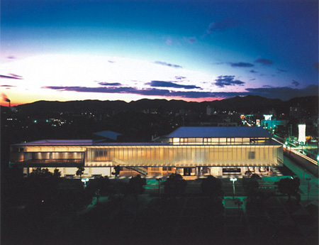

|
 |
| ■建設概要 | |
| 所在地／ | 兵庫県赤穂市 |
| 主用途／ | 図書館 |
| 建築主／ | 赤穂市 |
| 設計担当／ | 統括：吉田諭司 建築：渡辺 猛、熊谷 郁 構造：西田 力＋梅沢建築構造研究所 電気：岡井明彦 空調・衛生：栗本裕明 |
| 監理／ | 吉田諭司、渡辺 猛、森傳二郎、土岐達美、岡井明彦 |
| 設計協力／ |
図書館家具デザイン：近藤康夫デザイン事務所 照明デザイン：スタイルマティック松本研究室 図書館基本計画：図書館計画施設研究所 |
| 施工／ |
建築：鹿島建設 電気：東芝プラント建設 空調・衛生：高砂熱学工業 その他：鹿島建設（外構） |
| 構造／ | SRC、RC、S造 |
| 階数／ | 地上2階 |
| 面積／ |
敷地：4,967m2 建築：2,335m2 延床：3,316m2 |
| 竣工／ | 2001.12 |
| 受賞／ |
2002年度グッドデザイン賞（建築・環境デザイン部門） 第27回日本建築士事務所全国大会 建築作品賞 奨励賞（2002.8） 平成14年 照明普及賞 優秀施設賞（2003.6） |
| ■ CLOSED |